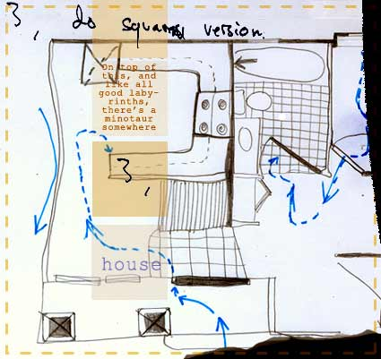

|
A friend says, “I know a guy who has a manuscript copy of House of Leaves .”
It's like the kid in your eighth grade homeroom telling you he's friends with Kurt Cobain or the one in the sixth grade who insisted hover boards would be in Toys 'R' Us by the end of the year.
“You're full of shit,” is the cleverest response I manage to come up with. “Next you'll tell me you've actually seen a copy of the full-color edition, with the word “minotaur” and strikeouts in red, and the epigraph for chapter 20 in raised Braille .”
There is a basic problem with this novel you've either read, are reading or will read: it was distributed by a major publishing house, hailed by critics, written about by academics and discussed by the hipsters and pseudo-intellectuals that populate your local coffee shop – the one where you can smoke and are likely to hear Andy Warhol and Histoire de Melody Nelson back to back – but despite all evidence to the contrary, a case can be made that the novel doesn't actually exist.
 You can touch Mark Z. Danielewski's House of Leaves . Like most traditional novels written in English, it's bound on the left and (mostly) reads from front to back. It consists of interrelated narrative arcs played out by readily identifiable characters. None of these things necessarily makes a novel though, and it is only when they are working in concert do we end up with Remembrance of Things Past or even Harry Potter and the Order of the Phoenix .
That's the rub. House of Leaves doesn't bother with structuring these elements together. Characters' relationships are unclear, and we, the readers, are expected to make some sense of them. There is no way to tell if any of the readily identifiable characters exist in the confines of the novel, and most beguiling, even the physical binding can be called into doubt, because there's no real way to tell where the world of the novel begins and our reality ends. This novel and its complete lack of cohesion is about the complete lack of cohesion we experience everyday: How we're losing the distinctions between the “real” (say, a neighborhood ) and the unreal (an Internet community ), and how our identities are becoming shaped less and less by class, race and gender, and more and more by an impulse to perform. By proxy, everything else loses its identifying characteristics, how we can no longer say “this is a man,” “this is a woman,” “ this is an intelligence ,” “this is a physical space,” “this is a house.”
First and foremost, House of Leaves is about a house on Ash Tree Lane owned by the Navidson Family. It's a fairly typical nuclear arrangement : mom, dad, brother and sister. The Navidsons have only recently moved in when they discover a doorway that they've never noticed before. The doorway leads to a hallway, the hallway emanates a cold darkness, and leads to a space bigger than the house itself. Tentatively the Navidsons explore the hallway and find that not only is it much bigger than the house, it doesn't have a shape and is not bound to physical realities. It will move doorways to different locations, telescope its stairways to unclimbable distances and trap an occupant in a room without openings. And like all good labyrinths, there's a minotaur somewhere inside.
Lucky for us, the family patriarch, Will Navidson, just happens to be a retired photojournalist and has rigged the house with an array of High-8 cameras to document his family settling in and their subsequent unsettling discoveries about their home. The final product is a documentary called “The Navidson Record.”
Just as novels don't translate directly to film, the reverse adaptation is not without its birthing pains. Enter Zampanò, our guide through “The Navidson Record,” as the house and the documentary are all filtered through him. Zampanò has assembled a scholarly analysis of “The Navidson Record,” titled House of Leaves , which examines the film, its history and its critical response. While the process seems simple enough, Zampanò is blind, therefore unable to see “The Navidson Record,” and dead, therefore unable to complete the analysis of the film he can't see.
Zampanò's manuscript – a jumble of odd scraps of paper really – is found, assembled and analyzed by Johnny Truant , a 20-something loser with a penchant for controlled substances and an aversion to the truth. Truant's commentary brings House of Leaves closer to its audience again, breaking down some of Zampanò's more complex references and translating the un-translated text. |